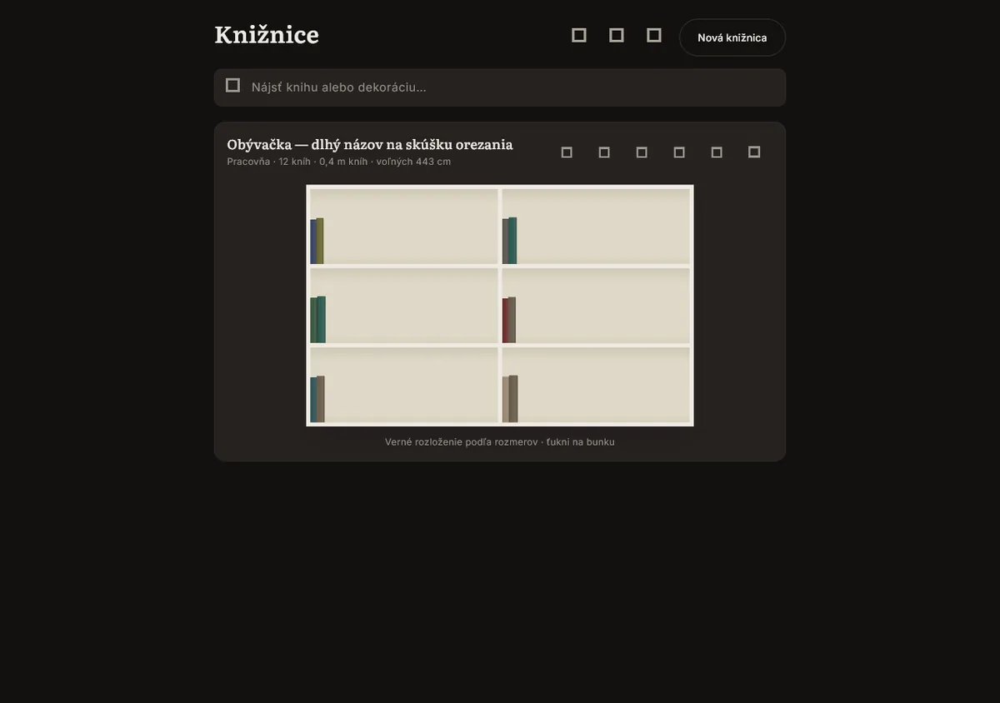
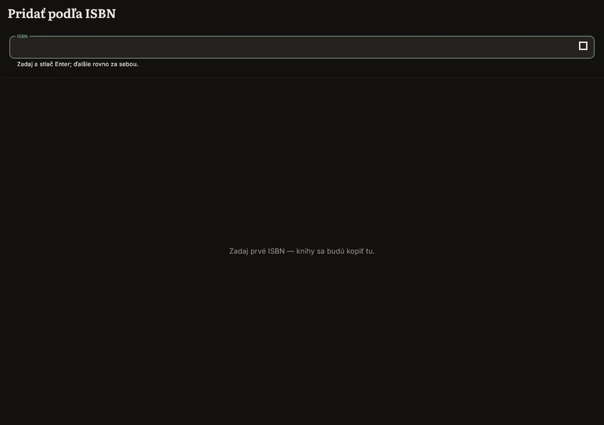
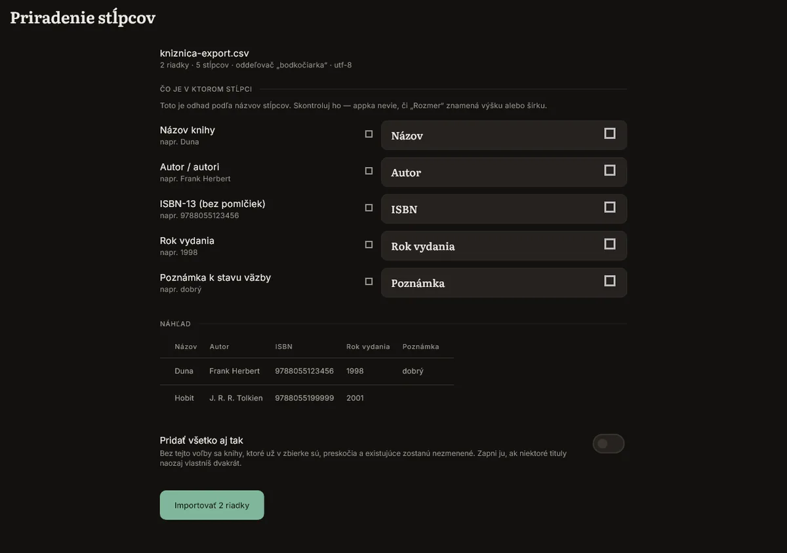
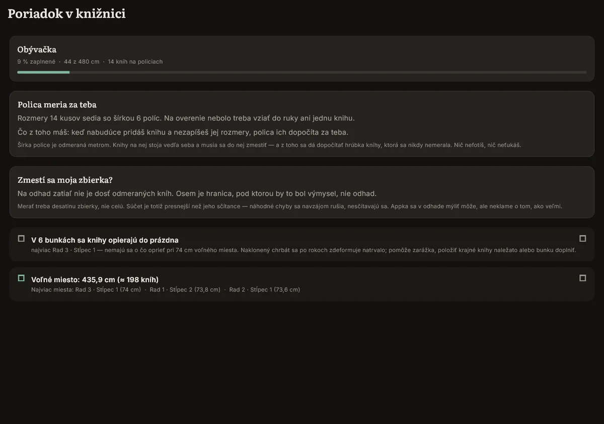
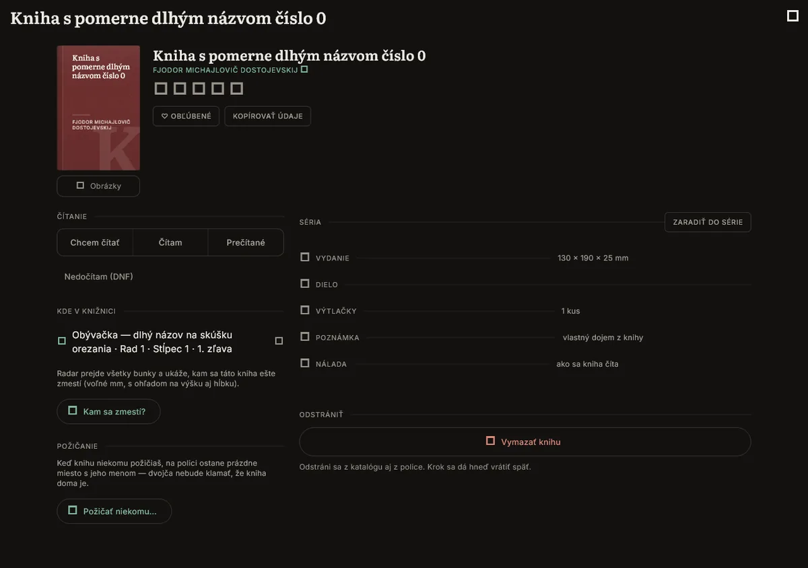
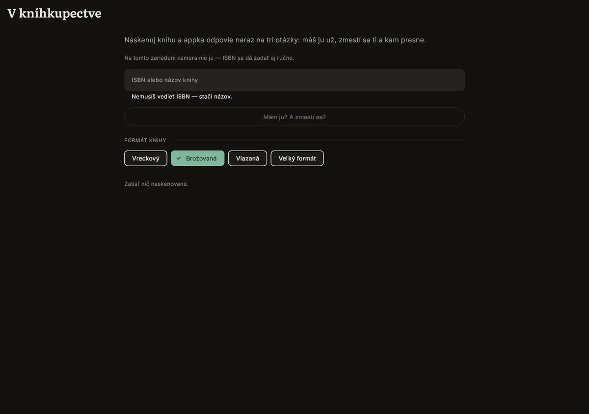
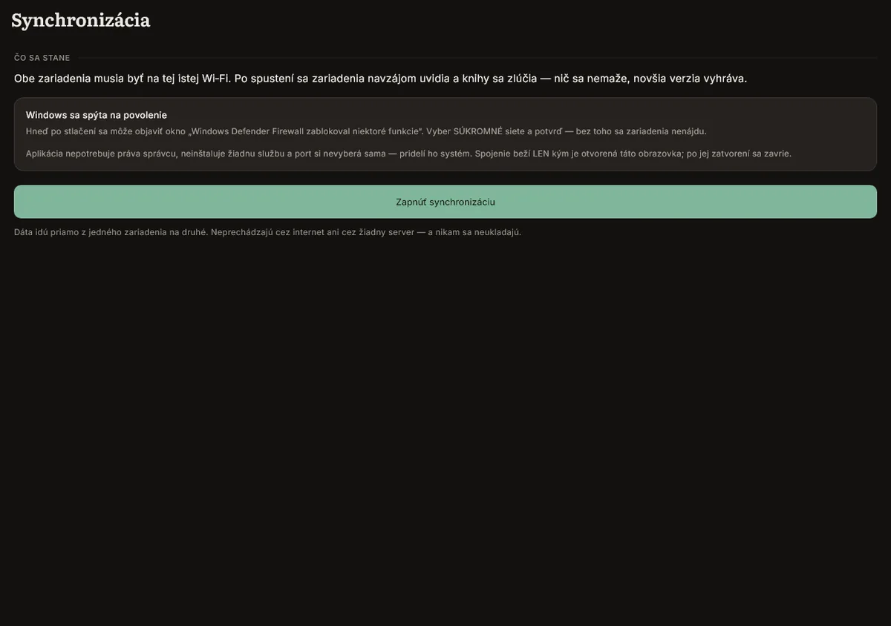
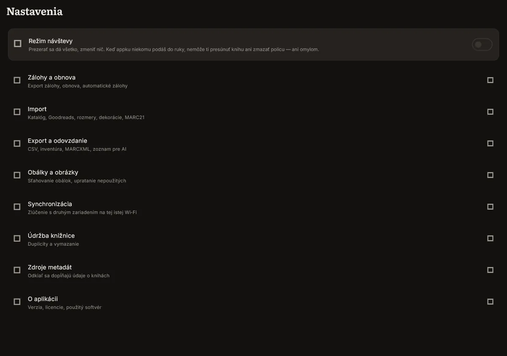

How to use bookapp.
Twelve short chapters, each with the exact steps and one real screenshot. Everything here matches version 0.1.0-beta. Where a feature isn't finished yet, this guide says so instead of guessing.
- version 0.1.0-beta
- Android and Windows
- 12 chapters
- updated 2026-09-05
01
Install
bookapp is a free public beta, downloaded directly. It is not on Google Play or the Microsoft Store yet, so both operating systems warn you before the first run. That warning is expected.
- Open the releases page on GitHub and download the file for your device: the APK for Android (arm64, about 35 MB) or the .zip for Windows (about 41 MB).
- Android: open the downloaded APK. Android blocks installs from outside Google Play by default. Allow it for this one file and continue. The APK is signed.
- Windows: unzip the folder and run
bookapp.exedirectly. There is no installer and it does not need administrator rights. - Windows: SmartScreen shows "Windows protected your PC" because the build is not code-signed yet. Click "More info", then "Run anyway".
- First launch opens straight to Libraries: no sign-up, no setup wizard. Tap "New library" to start; chapter 2 covers that.
Where your data lives: on Windows, in Documents\bookapp\bookapp.sqlite, next to a Documents\bookapp\backups folder you can open in File Explorer. On Android, the library itself sits inside the app's private storage, which you can't browse directly, but its backups are mirrored to a folder your phone's file manager can see (chapter 9 has the exact path). Nothing is uploaded anywhere either way.
Pozor: Android and Windows only, for now. There is no iPhone, iPad or Mac build.
No screenshot for this chapter: both warnings shown above come from Android and Windows themselves, not from bookapp.
02
Your first library
A library is one collection tied to one room. You can have as many as you like: one per room, or one for the whole flat.
- Open bookapp. "Libraries" is the home screen; it lists every library you've created as a card, each with a small preview of its shelves.
- Tap "New library".
- Give it a name and pick which room it's in. Both show up on the library card afterwards.
- The library opens empty. Earlier betas offered a ready-made sample library to explore first; that was deliberately removed, so you start from your own room and build it shelf by shelf (chapter 3 is exactly that).
- Once there are books on shelves, each card keeps a running summary on its own: how many books, how many linear metres of books, and how much shelf space is still free.
Tip: the search field at the top of Libraries ("Find a book or a decoration...") searches your whole collection at once, across every library, not just the one you're currently looking at.

03
Drawing shelves
Every shelf, cabinet and drawer is drawn to its own real millimetres, not to a generic grid. That is what lets bookapp later tell you whether a book actually fits.
- Inside a library, set up the grid: how many rows and how many columns of cells the bookcase has.
- Drag the ruler on a row or column edge to set its true width or height in millimetres. Cells don't have to match: a row can be 820, 460 and 640 mm across, for example, and bookapp keeps every cell's own size.
- Select two or more adjoining cells and merge them into one block, for a cabinet or a wide shelf that spans what would otherwise be several cells.
- Open a cell and set what kind of place it is: a shelf (open, seen from the front), a drawer (seen from above), or a slot for a TV or air conditioning. For a cabinet, add doors: single or double, hinged left, right or centre, solid or glazed.
- Setting a cell's depth is optional, but doing it turns on the check for whether a book would stick out the front.
- Don't have the bookcase in front of you yet? Sketch its shape on ordinary grid paper first, then turn the sketch directly into cells.
Tip: a cell's width and height should be the size of the opening, gaps between shelf boards included. bookapp already accounts for the boards themselves, so measure (or drag) the opening, not a single plank.
04
Adding books
Four ways in, all landing in the same catalogue: scan, search, type it by hand, or import a whole spreadsheet at once.
- Scan (phone only): open "Add by ISBN" and point the camera at the barcode. bookapp fills in title, author and cover from Open Library.
- Keep the field focused and scan the next book right away: about 50 books in two minutes for a full shelf.
- No barcode, or on Windows: the scanner only exists on the phone build. Use "Search for a book" and type a title or author instead; it also searches Open Library, and you can edit whatever it finds before saving.
- Still nothing found: add it by hand with "New book". Title is the only required field; author, ISBN and dimensions are all optional.
- Already cataloguing elsewhere: import a CSV or Excel export from Goodreads, StoryGraph, or your own spreadsheet. bookapp guesses which column is which on the "Column mapping" screen, shows a live preview, and you fix the match before anything is written. A separate switch controls whether books you already own get skipped or added again.
- Library software instead: MARC21 import and export both work.
Pozor: MARC21 only carries a book's height, in whole centimetres, so an import from MARC21 is always marked as an estimate, never a measurement.


05
Measuring books
bookapp does not read a book's thickness from a photo. Four different methods were tried on real shelves and none were accurate enough to trust, so instead of guessing quietly, bookapp is explicit about where every size comes from.
- Measure a book once with an actual ruler and type its height, width and thickness in millimetres.
- Or pick its format instead: paperback, hardback, and so on. bookapp fills in a typical thickness for that format and marks it as an estimate until you correct it.
- Once a shelf is completely full and every book on it has at least a format, open "Order in the library". The shelf's own known width lets bookapp back-calculate the real thickness of the books on it that were never measured directly: no photo, no camera, just arithmetic from a full shelf.
- Check the "spatial accuracy" figure in Statistics any time: it tells you what share of your library's dimensions are actually measured versus estimated.
Where each number came from: every dimension bookapp shows is tagged with its source: measured by you, back-calculated from a full shelf, estimated from a format, taken from an import, or unknown. Nothing is ever silently made up.
Pozor: photo measurement was tested seriously, on real shelves, four separate times, and rejected on 29 July 2026 because it was wrong often enough to be dangerous. A confidently wrong number is worse than an empty field, so bookapp doesn't ship one.

06
Placing books
bookapp checks a book against every cell in the library, in every way it could physically stand, and orders the results so the one you actually want is at the top.
- Open a book's detail page and tap "Where will it fit?": bookapp checks every cell in the library and lists which ones have room.
- Each candidate is checked in all three ways a book can stand: spine out, cover forward, or lying flat (and turned into the depth of the shelf, as a last resort, when nothing else fits).
- To place a whole series at once, use "Place a series": pick the series, and bookapp finds a run of shelf that keeps every volume together, in the right order, and tells you how it fits.
- Where a specific book belongs on a shelf isn't arbitrary: bookapp orders candidates by series first, then author, then snugness, the tightest sensible fit.
- A placement can be tried and undone with a single tap before you commit to it.
- Running out of room? "Free up space" finds a reshuffle. It tells you up front how much continuous space it would free ("you gain 400 cm", say, from five shelves emptied completely, not scattered gaps you couldn't use anyway), and lists every move before you accept it.
Tip: a series page also flags "missing part 3" by counting the gaps between the volumes you actually own. It only warns about books you seem to be missing, not simply every number past the last one you catalogued.

07
In the bookshop
Built for the moment you're standing in a shop holding a book, wondering whether you already own it and whether it would even fit at home.
- Open "In the bookshop" before you buy.
- Scan the ISBN, or type the title if there's no barcode, or no camera on this device.
- If you don't know the book's exact size yet, pick its format instead: pocket, paperback, hardback, or large format.
- One scan answers three questions at once: do you already own it, will it fit anywhere in your library, and exactly where.
Tip: it works without a camera too. Type the ISBN or the title by hand and get the same three answers.

08
Sync phone and PC
Your phone and your Windows PC talk to each other directly over your own Wi-Fi. No server sees your library, ever.
- Put both devices on the same Wi-Fi network.
- Open "Sync" on both.
- On Windows, allow the connection the first time "Windows Defender Firewall blocked some features" appears: tick Private networks and confirm. Without it the two devices can't find each other. bookapp doesn't need administrator rights, doesn't install a service, and the connection only exists while this screen is open on both sides.
- Tap "Turn on sync" on both devices.
- Choose the direction, and let it merge: nothing is deleted, and where the same record changed on both sides, the newer edit wins.
- Handing the phone to someone else, or bringing it into a shop where a stray tap could move a book? Turn on "Visitor mode" first: everything stays browsable, but nothing can be moved or deleted, not even by accident.

09
Backups, restore and export
Backups happen without being asked for, and the app makes one more before anything it does could lose data.
- bookapp backs itself up automatically and silently every day, keeping the last seven. It's data only (catalogue, shelves, dimensions, reading), not cover images, so all seven together come to a few megabytes.
- Before any action that would overwrite your library (restoring, a big import, wiping a library), bookapp takes one extra "safety backup" first, specifically so that action can be undone.
- Backups live outside the app on purpose. On Windows:
Documents\bookapp\backups. On Android: a folder in the phone's shared storage that's visible in a file manager or over USB, so a lost or reset phone doesn't take your backups with it. Uninstalling bookapp does remove this folder, though, so copy it out first if you're about to uninstall. - Go to Settings → "Backup and restore" to export a backup on demand, or restore one. Restoring replaces the current library: that's exactly why the safety backup exists.
- Need the data in another shape? Settings → "Export and handover" covers CSV, JSON, MARCXML, an inventory sheet, and a plain list formatted for handing to an AI tool.
- Moving flats, selling a bookcase, or just want a paper record? Export the PDF library audit and a joinery report (dimensions and a cut list, including drawer cut-outs). Every export carries a signature stating exactly which data it was built from.
Pozor: MARC21 export only carries a book's height, in whole centimetres. Treat a round-trip through MARC21 as a downgrade in precision, not a full backup.

10
Settings and language
- Language and appearance live together, in Settings → "About": Slovak or English, chosen directly or set to match your system. It applies immediately, no restart.
- Switching the interface language doesn't translate stored data: values like a copy's condition or export column headers keep their internal English code names on purpose, so an older backup, or a sync with a device set to the other language, still reads correctly.
- Theme (match system, light, or dark) sits on the same screen and also applies immediately.
Units: bookapp shows sizes in millimetres and centimetres; there is no separate switch for inches today, and dimensions are always stored in millimetres underneath, whichever language the interface is in.
No screenshot for this chapter yet: the language and theme switches sit inside the About screen, which isn't captured separately from the rest of Settings in this build.
11
Troubleshooting
- Android says "App not installed": this happens when an older or differently-built copy is already on the phone. bookapp's release APK carries its own version number per device architecture, and Android refuses anything it reads as a downgrade. Fix: uninstall the old copy first, then install the fresh APK from the latest release.
- Windows SmartScreen: "Windows protected your PC" appears because the build isn't code-signed yet (chapter 1). Click "More info", then "Run anyway".
- Sync can't find the other device: check that both devices are actually on the same Wi-Fi (not a guest or isolated network, which many public and some home "guest" networks use on purpose to keep devices from seeing each other), that the Sync screen is open on both sides at once, and that you allowed the Windows Firewall prompt for private networks.
- A dimension looks wrong: open the book and check where that number came from (chapter 5). An estimate or an import is allowed to be off; a manually measured one shouldn't be. Re-measure it with a ruler and re-enter it.
- Reporting a bug: this beta doesn't write a crash log yet, so the most useful report is a precise one: which screen, what you tapped, what you expected, what happened instead, and whether it happened again on a second try. Open an issue on GitHub. If the app fails to start at all, don't touch anything else first. Copy the backups folder (chapter 9) somewhere safe before you reinstall or clear any data.
12
Glossary
Terms used throughout this guide, as bookapp itself uses them.
- Cell
- One square of the grid: a shelf, a drawer, or a slot for a TV or air conditioning, each with its own real width, height, and optional depth.
- Block
- Two or more adjoining cells merged into one physical piece of furniture: a cabinet spanning several shelf openings, for example. A block's footprint is always one whole rectangle.
- Cabinet
- A cell or block fitted with doors: single or double, hinged left, right or centre, solid or glazed.
- Drawer
- A cell viewed from above rather than from the front: its contents, and their exact positions, are drawn on its floor.
- Shelf as a ruler
- A fully packed shelf whose own known width lets bookapp back-calculate the thickness of any book on it that was never measured directly (chapter 5).
- Dimension source
- Where a book's size came from: measured by you, back-calculated from a full shelf, estimated from its format, taken from an import, or unknown.
- Orientation
- How a book stands in its cell: spine out, cover forward, lying flat, or turned into the depth of the shelf when nothing else fits.
- Visitor mode
- A lock that leaves the whole library browsable but blocks every change. Made for handing the phone to someone else without risking a stray tap.
- Trial layout
- A placement you can try and undo with a single tap before committing to it.